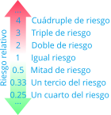

4 Medidas de asociación
Tanto la prevalencia como la incidencia permiten estudiar la magnitud y la evolución de una enfermedad, pero no permiten analizar sus posibles causas. Cuando se quiere investigar si la exposición a un determinado factor influye en el desarrollo de una enfermedad hay que comparar los riesgos de dos grupos:
- Grupo tratamiento \(T\): individuos expuestos al factor.
- Grupo control \(C\): individuos no expuestos al factor.
Los resultados del estudio se resumen en una tabla de contingencia como la siguiente, donde \(E\) es el suceso de padecer la enfermedad y \(\overline E\) el de no padecerla.
| \(E\) | \(\overline{E}\) | |
|---|---|---|
| Grupo tratamiento \(T\) | \(a\) | \(b\) |
| Grupo control \(C\) | \(c\) | \(d\) |
A partir de esta tabla se pueden definir dos medidas de asociación entre el factor y la enfermedad: el riesgo relativo y el odds ratio.
4.1 Riesgo relativo
Definición 4.1 (Riesgo relativo) El riesgo relativo de un suceso \(E\) es el cociente entre el riesgo del grupo tratamiento y el riesgo del grupo control,
\[RR(E)=\frac{\mbox{Riesgo grupo tratamiento}}{\mbox{Riesgo grupo control}}=\frac{R_T(E)}{R_C(E)}=\frac{a/(a+b)}{c/(c+d)}\]
Ejemplo 4.1 Para estudiar la eficacia de una vacuna contra la gripe se ha tomado una muestra de 500 personas vacunadas y otra de 500 no vacunadas, obteniéndose los siguientes resultados.
| Gripe \(G\) | No gripe \(\overline{G}\) | |
|---|---|---|
| Vacunados \(T\) | 20 | 480 |
| No vacunados \(C\) | 80 | 420 |
El riesgo relativo de padecer gripe es
\[RR(G) = \frac{20/(20+480)}{80/(80+420)} = 0.25,\]
es decir, el riesgo de padecer gripe en los vacunados es la cuarta parte del riesgo en los no vacunados.
4.1.1 Interpretación del riesgo relativo
- \(RR=1 \Rightarrow\) No hay asociación entre el suceso y la exposición al factor.
- \(RR<1 \Rightarrow\) La exposición al factor disminuye el riesgo del suceso (factor de protección).
- \(RR>1 \Rightarrow\) La exposición al factor aumenta el riesgo del suceso (factor de riesgo).

4.2 Odds ratio
Del mismo modo que se pueden comparar los riesgos de los grupos tratamiento y control, se pueden comparar también sus odds.
Definición 4.2 (Odds ratio) El odds ratio o razón de odds de un suceso \(E\) es el cociente entre el odds del grupo tratamiento y el odds del grupo control,
\[OR(E)=\frac{\mbox{Odds grupo tratamiento}}{\mbox{Odds grupo control}}=\frac{O_T(E)}{O_C(E)}=\frac{a/b}{c/d}=\frac{ad}{bc}\]
Ejemplo 4.2 Con los datos del ejemplo anterior,
| Gripe \(G\) | No gripe \(\overline{G}\) | |
|---|---|---|
| Vacunados \(T\) | 20 | 480 |
| No vacunados \(C\) | 80 | 420 |
el odds ratio de padecer gripe es
\[OR(G) = \frac{20/480}{80/420} = 0.22.\]
4.2.1 Interpretación del odds ratio
- \(OR=1 \Rightarrow\) No existe asociación entre el suceso y la exposición al factor.
- \(OR<1 \Rightarrow\) La exposición al factor disminuye el riesgo del suceso.
- \(OR>1 \Rightarrow\) La exposición al factor aumenta el riesgo del suceso.
4.3 Riesgo relativo frente a odds ratio
El riesgo relativo es una comparación de probabilidades, pero depende de la incidencia de la enfermedad.
La interpretación del odds ratio es más enrevesada porque es contrafactual, ya que indica cuántas veces es más frecuente el suceso en el grupo tratamiento en comparación con el control, asumiendo que en el grupo control es tan frecuente que ocurra el suceso como que no. Su ventaja es que no depende de la incidencia de la enfermedad, lo que lo hace imprescindible en los estudios de casos y controles, donde el investigador fija de antemano el número de enfermos y sanos de la muestra.
Ejemplo 4.3 Para estudiar la asociación entre fumar y el cáncer de pulmón se han tomado dos muestras, la segunda con el doble de pacientes sanos que la primera.
| Muestra 1 | Cáncer \(E\) | No cáncer \(\overline{E}\) |
|---|---|---|
| Fumadores \(T\) | 60 | 80 |
| No fumadores \(C\) | 40 | 320 |
\[ \begin{aligned} RR(E) &= \frac{60/(60+80)}{40/(40+320)} = 3.86,\\ OR(E) &= \frac{60/80}{40/320} = 6. \end{aligned} \]
| Muestra 2 | Cáncer \(E\) | No cáncer \(\overline{E}\) |
|---|---|---|
| Fumadores \(T\) | 60 | 160 |
| No fumadores \(C\) | 40 | 640 |
\[ \begin{aligned} RR(E) &= \frac{60/(60+160)}{40/(40+640)} = 4.64,\\ OR(E) &= \frac{60/160}{40/640} = 6. \end{aligned} \]
Obsérvese que el riesgo relativo cambia al cambiar la proporción de sanos de la muestra, mientras que el odds ratio se mantiene constante.
4.4 Aplicación a la COVID
Durante la pandemia se publicaron multitud de estudios que utilizaban estas medidas de asociación para identificar los factores de riesgo y de protección frente a la COVID: